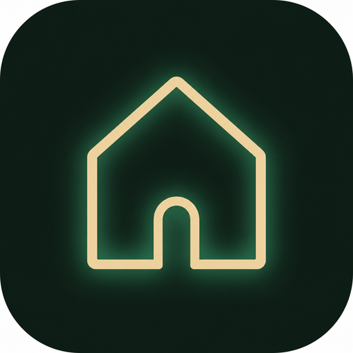

Steady as Home
Your Home screen becomes Steady — big clock, allowed apps, a simple dock for Phone, Messages, Camera, Gallery.

Steady helps you — or your child — spend less time lost in the phone. Simple profiles, a calm home screen, and clear stops.
For yourself · For parents · Steady is your home
For you
Choose This phone is for me. Set a day schedule. Work, Focus, Learning, Fun, Sleep — Steady switches for you.
Your Home screen becomes Steady — big clock, allowed apps, a simple dock for Phone, Messages, Camera, Gallery.
Need open phone time? Unlock with your codes and take a Day off. End it when you’re ready.
Optional: give a code to a friend who Approves Fun when you want overtime. Keep yourself honest.
For family
Child phone + parent phone. Entertainment needs Approve. Bedtime, breaks, and a web filter help the day stay kind.
Fun isn’t automatic. They ask. You Approve or Deny from the parent phone.
When a new Steady is ready, an update icon can appear on Home — no hunting through locked Settings.
If protection is turned off, Steady locks and asks for it back. Optional full uninstall lock for serious setups.
Profiles
Schedules can also enter Sleep. Screen-off calls and background music don’t burn your minutes.
Android APK. Free. Install from this page, then follow setup.
Version loading…
Android may ask to allow installs from this browser — that’s normal.
Questions
Tap a question for a plain answer.
Tap Download → open the file → allow install if Android asks → open Steady. No store account needed.
Both. Pick for me for self-focus, or child / parent for family. Same calm engine either way.
No for normal use. Turn protection on from the phone. A computer is only for the optional uninstall-lock setup.
Yes. Download here. No subscription wall on current builds.
Setup → This phone is for me → set a PIN → turn protection on → add a day schedule in Settings.
On Steady Home, choose Make Steady my Home screen and pick Steady as default Home. The Home button returns here.
A sunny pause. Unlock with your codes, take open phone time, then end Day off when you’re ready. Friendly — not a “testing” maze.
Yes. Create a family code and give it to a friend on another phone. You Ask; they Approve. Optional accountability.
Yes. Long-press an app to edit — rearrange, star into the dock, reorder, or reset the layout.
Install → choose child → set unlock checks → follow the protection steps on the phone → pair with a parent phone using a family code. Full steps: setup guide.
They Ask for Entertainment. You Approve or Deny on the parent phone. Simple inbox. Clear yes or no.
When an update is ready, Home can show an update icon — so they can update without digging through locked Settings.
Set bedtime hours and forced breaks in parent Settings. Send rules to the child phone when you change them.
Yes, but two phones is stronger. If you use both-on-one, keep the PIN secret.
Screen-off calls and background music don’t burn the timer. Steady counts real screen-on app time.
Settings → language. English, Hebrew, Yiddish, Spanish, Russian.
PIN, draw-a-pattern lock, passphrase, security question, Steady Face, parent stamp, remote Approve, or a friend’s phone unlock. Pick 1–3 steps.
Updates can save under Downloads → Steady, so they’re easier to find if install needs a second try.
Yes. Call opens the stock Phone app — not a random second dialer.
Allow installs from your browser or Files, then open the APK again. Normal for website installs.
Uninstall the old build once, then install the newest APK. Android is picky about signing keys.
Take a Day off (unlock with your codes), then deactivate protection in system settings if you want to uninstall. Pause kindly — then exit.
Email labratcomputers@gmail.com — or send a suggestion below.
Contact
Questions, ideas, bugs — write anytime.